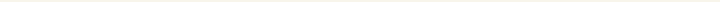

мои работы
Софья Бусыгина
Рисование из простых фигур
№ 4
В этой анимации впервые изучила рисование в самой программе Animatе. Все объекты были выполнены путём сочетания простых геометрических фигур. Здесь всё также присутствует посимвольная анимация (движение лапок объектов) и анимация движения (имитация течения воды).

2023 Design by @csoniks